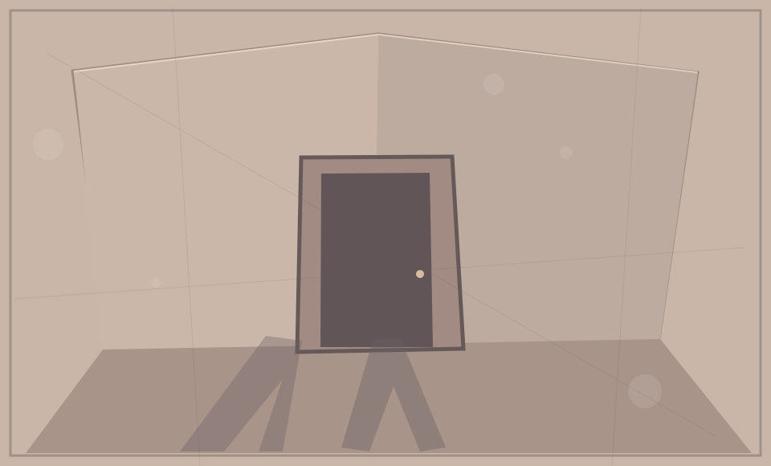

Дело №0
Вчера комнат было шесть. Сегодня их семь. Но седьмую никто не строил.
Проверяем доступ…31 / 10
После исчезновения Няника в лавке нашли запечатанную папку. В описи значилось четыре листа. Ни один не был подписан.
Первый лист обещали открыть 31 октября. Остальные станут доступны до полуночи.
РЕЕСТР МАТЕРИАЛОВ
0 / 4Четыре записи
Загружаем архив…
ЗАПИСЬ

Что было в комнате?
Одно слово объединяет три первых записи. Его достаточно, чтобы восстановить дело.
В архиве осталось место.
НЯНИК · ДЕЛО №0Материалы появляются по московскому времени. Прогресс ответа хранится в Nyan Wallet. Участие бесплатное, списаний и начислений нет.
Для сохранения ответа открой архив в Telegram. Открыть в боте